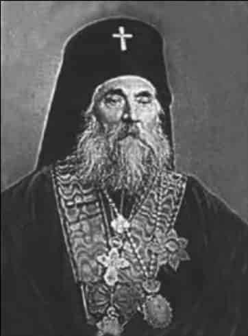
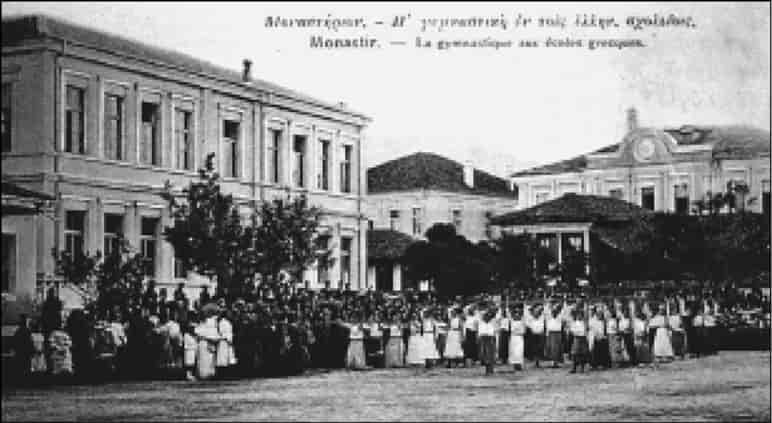
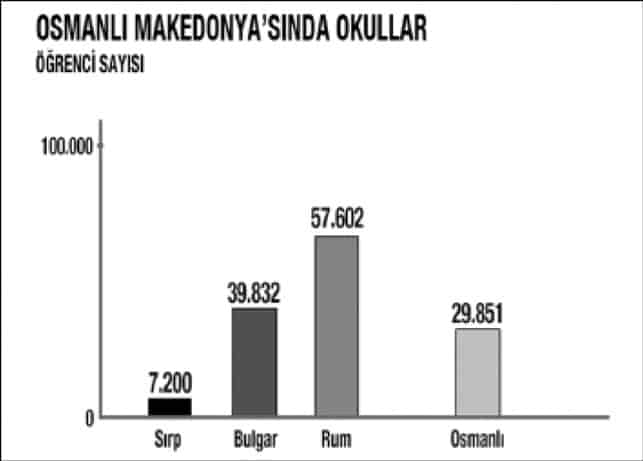
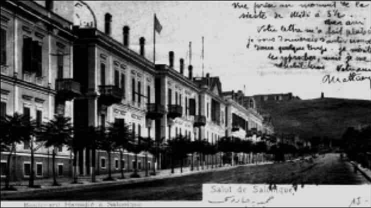
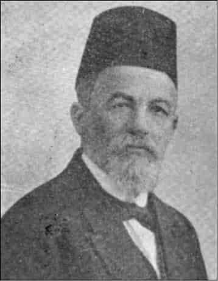
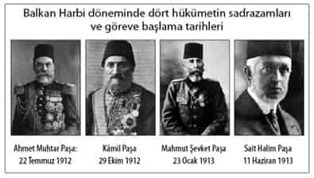
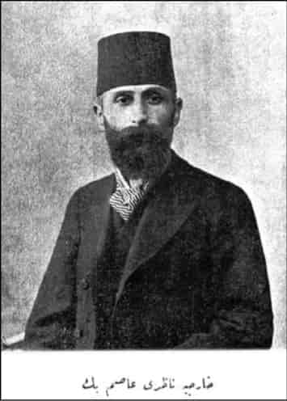
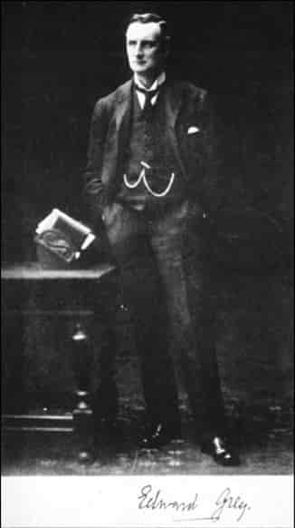

8

Osmanlı neden, nasıl çöktü?
Balkan Savaşı’nda Osmanlı İmparatorluğu’nun nasıl utanç verici bozgunlarla yenildiğini gördük. Birkaç ay içinde Osmanlı ordusu Adriyatik Denizi’nden Çatalca’ya kadar çekilmiş, Müslüman nüfus katliam ve tehcire maruz kalmıştı. Bu son bölümde Osmanlı’nın bozguna uğramasının sebeplerini ve bunun sonuçlarını, en önemlisi Türk milliyetçiliğinin ortaya çıkışını göreceğiz.
Osmanlı bozgununun pek çok sebebi vardır ama temeldeki bir ana sebepten bahsedilebilir: Dünya milliyetçilikler çağına girmişti, çokuluslu imparatorluklar bünyelerindeki kavimlerde uyanan ayrılıkçı milliyetçilik hareketleriyle içten yıkılıyordu.
Kabaca 1800’lü yılların ilk çeyreğinden 1900’lü yılların ilk çeyreğine kadar tam yüzyıl süreyle oluk oluk kan aktı. Asırlardır birlikte yaşayan, dost ve iyi komşu olanlar, birdenbire aynı köyde, aynı mahallede ayrı milletler haline gelivermiş, düşman olmuşlardı.
Böyle bir çağda çokuluslu imparatorluklar eskisi gibi devam edebilir miydi?
Bu kanlı yüzyılın en kanlı sahnesi, Makedonya’dır. Bulgar, Yunan ve Sırp komitalarıyla, kanlı eylemlerle, Osmanlı’nın bastırma harekâtlarıyla Makedonya...
Zafer Toprak: Milliyetçiliğin etnikleşmesi Balkan Harbi’yle çok yakından alakalı. Bunu bir kere vurgulamak gerekir. Balkan Harbi’nden önceki savaşlar, 19. yüzyıldaki savaşlar aristokratik savaşlardı. Diğer bir deyişle monarklar [hükümdarlar] savaşıyordu. Oysa Balkan Harbi’yle birlikte savaş nosyonu kitleselleşti, bu nedenle de savaşın artık toplum katmanlarına doğru yaygınlaştığını görüyoruz ve etnik diye nitelendirebileceğimiz birtakım unsurlar artık savaşta tavır koymaya başlıyorlar. Bu, Balkan Savaşları’nın çok önemli bir özelliği ve bu nedenle de zaten 20. yüzyıl, Balkan Harpleri’yle birlikte başlamıştır diyebiliriz...
Artık ordu, halk, okul, komitacı, savaş kavramlarının iç içe geçtiği bir çağa girilmiştir. Eskiden Balkan köylüleri için, yeryüzünde bütün köylüler gibi, baştaki hükümdar kim olursa olsun çok fark etmezdi, az vergi alması ve adil olması yeterli bulunurdu. Osmanlı böyle davranarak Balkanlar’ı beş yüz yıl yönetmişti. Ancak modernleşmeyle birlikte eğitimin, okulun ve gazetenin yaygınlaşmasıyla durum değişti, milli dil meselesi önem kazandı. Milliyetçi fikirlere bağlanan öğretmenler, papazlar ve Balkanlar’da çıkarları olan yabancı devletlerin konsolosları, asırlardan beri padişahın sadık tebaası olan Balkan köylülerine milliyetçilik fikrini götürdüler. Dil ve din, okul ve kilise temel aktörlerdir. Artık Makedonya’daki Sırp, Yunan ve Bulgar köylüleri de ayrı bayrak istiyorlardı. Selanik valiliği yapan Hüseyin Kâzım Kadri Bey şöyle anlatır:
Köylüler için en büyük emel Bulgar, Sırp ve Yunan bayraklarının altında fotoğraf çektirmekti. Çete teşkilatı en küçük köylere kadar yayılmıştı. Gizlice hudutlarımıza giren eşkıyalar köylerde kendilerine istedikleri kadar silah ve arkadaş bulabiliyorlardı. Memleket [Makedonya] ruhuyla, fikriyle, kanaatiyle bizim aleyhimizdeydi.1
Kilise ve okul Makedonya köylülerinden Bulgar ve Rum komitacıları çıkartmıştı. Balkan milliyetçiliği bu yüzden çok kan dökücü oldu.
Zafer Toprak: Tabii, Balkanlar o denli bir halitadır ki, çok değişik unsurları bağrında yaşatan bir yapıya sahiptir, bir noktada milliyetçilikler, Batı türü milliyetçilikler şeklinde oluşmuyor. Balkanlar’da oluşan milliyetçilikler çok daha kırıcı, çok daha yıpratıcı türde milliyetçiliklerdir. Batı’da milliyetçilik burjuvazinin yani kent kültürünün bir parçasıdır. Balkanlar’da ise böyle bir şey yoktur. Bilakis yani kentler dışında giderek tabana yaygın bir şekilde, kırsal kesimde kitleleri mobilize etmeye yönelik bir çaba ön plana çıkmaktadır. Burada da tabii komitalar, komitacılar önemli bir rol oynayacaktır. Çünkü bu topraklar her şeyden evvel Osmanlı toprağı ve yönetimler kentlerde Osmanlı yönetimi. Yani başkaldırı bir şekilde tabandan geliyor. Yani Balkan çeteciliği, komitacılığı, bir ölçüde milliyetçiliğin tabandan yola çıkışıyla çok yakından bağlantılıdır.
Bulgar ve Rum köylülerinden komitacı yetiştiren kilise ve okul ya da papaz ve öğretmen faktörü üzerinde biraz durmak gerekir.

Atanas Mihailov Chalakov.
Kilise ve okullar
Bizans’ta ve klasik Osmanlı asırlarında Rum Patrikhanesi, Bulgarlar ve Sırplar dahil bütün Ortodoksları kapsıyordu, etnik ayırım yoktu. 19. yüzyılda Ortodoks Bulgarlar ve Sırplar, Rum Patrikhanesi’nden ayrılıp kendi kiliselerini kurmaya yöneldiler. Bulgar patriğine eksarh deniliyor. Patrikhaneden bağımsız Bulgar kiliselerinin kurulmasına Osmanlı Devleti 1848’de izin verdi, 1856 Islahat Fermanı’ndan sonra resmen tanıdı. Patrik anlamına gelen ilk Bulgar eksarhı 1872’de Osmanlı tarafından onaylanan Atanas Mihailov Chalakov’dur.
Kiliseler her köyde vardır. Yunan ve Bulgar milliyetçiliğini işleyen okullar da artık köylere kadar yayılıyor.
1912-1913 yıllarındaki Balkan Savaşları üzerine 1914 yılında bir kitap yazan Amerikalı Jacob Gould Schurman, 1900 yılında Osmanlı Makedonyası’ndaki etnik okulların ve öğrencilerin sayılarını veriyor:
● 178 Sırp okulunda 7.200 öğrenci
● 875 Bulgar okulunda 39.832 öğrenci
● 927 Rum okulunda 57.602 öğrenci
Osmanlı Makedonyası’nda bu okullar Bulgar, Rum ve Sırp toplumları ve kiliseler tarafından kuruluyordu. Schurman, Bizans’tan gelen köklü Rum kiliseleri sayesinde okul açma konusunda Rumların en şanslı topluluk olduğunu yazıyor. Bulgar ulusal kimliğini Bulgar kilisesinin yarattığını da belirtiyor.2
Makedonya’daki Rum ve Bulgar okullarındaki öğretmenlerin tamamına yakını Bulgaristan ve Yunanistan’da eğitilmişlerdi. Tarihçi Anastasia Karakasidou, bunları “siyasi ajan olarak da çalışan öğretmenler” diye tanımlıyor. Bunlar Bulgaristan, Yunanistan ve İMRO gibi komitaların ideolojilerini kırsal kesime, köylere götürüyorlardı.3
Amerikan Carnegie Vakfı’nın Balkan Harbi’ne ilişkin raporunda belirtildiği gibi, Osmanlı vatandaşı Ortodoks bir Makedonya köylüsü, Rum kilise veya okuluna gittiğinde, Rum; Bulgar kilise veya okuluna gittiğinde Bulgar cemaatine mensup sayılıyordu. Komitalar elemanlarını bu okullardan devşiriyordu.4
Bulgar ve Yunan milliyetçilikleri Makedonya’da okul açmak için, Anastasia Karakasidou’nun deyimiyle, “neredeyse çılgınlık noktasına varan” bir yarış ve çekişme içindeydiler. Bu enerjiyle Makedonya’daki Bulgar okullarındaki öğrenci sayısı 1912 başında 70.000’e ulaşmıştı.5 On yılda yaklaşık yüzde yüz artış!
Osmanlı Ermenisi Aram Andonyan Balkan Savaşı hakkındaki kitabında Makedonya’daki okullar, Rum ve Bulgar kiliseleri ve milliyetçilik hakkında ayrıntılı bilgiler verir. Rum okullarının “Helenizm ocakları olduğunu” belirtir. Rum Patrikhanesi’nin ve Makedonya’daki metropolitlerin “Yunan konsoloslarıyla el ele Helenizm’in Megali İdea’sını gerçekleştirmeye çalıştıklarını”, amaçlarının “Makedonya’yı Yunanlaştırmak” olduğunu anlatır. “Yunan iddialarının amaç edindiği” yerleri sayarak “bu alanı Bizans İmparatorluğu’nun eski arazisiyle karşılaştırınca ilginç bir manzara ortaya çıkar” diye yazarak Yunan emelleriyle Bizans coğrafyası arasındaki örtüşmeyi vurgular. Bulgar Eksarhlığı ile Ermeni Patrikliği’nin, Fener Patrikhanesi’nin Balkanlar’daki bütün Ortodokslar üzerinde kurduğu Helenizm baskısına karşı geliştiğini, Bulgar milliyetçiliğinin bu şekilde uyandığını anlatan Andonyan’ın şu satırları tarihe yapılmış önemli bir tanıklıktır:
Makedonya’da tartışma konusu olan, çeşitli ırkların varlığı değil, o bölge Osmanlı Devleti’nin elinden kapılacağı zaman hangi etnik topluluğun malı olacağı, başka bir deyişle hangi Balkan devletine katılacağıydı.6

Osmanlı Manastır vilayetinde Rum lisesi.
Peki, Osmanlı niye bu okullara izin veriyordu? Bırakın izni, bu okullar üzerinde Osmanlı Eğitim Bakanlığı’nın yani Maarif-i Umumiye Nezareti’nin denetimi bile yoktu:
Zafer Toprak: Osmanlı’nın bildiğiniz gibi çok unsurlu bir imparatorluk oluşu nedeniyle hukuk düzeninde de çok unsurluluk var. Şer’î hukuk var, nizami hukuk var, ecnebi hukuku var, beraberinde de birtakım, azınlık demeyeceğim çünkü azınlık değil onlar, birtakım cemaatler hukuku var. Aynı şey eğitimde de söz konusu... Medrese gibi birtakım kurumlar İslami nitelikte, dinsel nitelikte okulları oluşturuyorlar. Bunun yanı sıra idadi, rüşdiye diye okullar var, bunlar daha sekülarize okullardır. Ecnebi okulları var, yabancı okulları var. Ama bunların yanı sıra da anasırın, yani gayrimüslimlerin oluşturduğu cemaat okulları var ve bu cemaat okullarının programları tamamen bağımsız, yani Maarif-i Umumiye Nezareti’yle [Eğitim Bakanlığı] hiçbir ilişkisi yok. Ancak 1915 yılından itibaren bu okullarda mesela Türkçe zorunlu hale geliyor, Osmanlı tarihi okutulmaya başlanıyor, Osmanlı coğrafyası okutulmaya başlanıyor...
Tarihçi Zafer Toprak, Cumhuriyet devrinde tevhid-i kaza, yani yargı birliği ve tevhid-i tedrisat yani eğitim birliği politikalarının bu duruma bir tepki olarak geliştiğini belirtir.
Osmanlı, bu okulları Eğitim Bakanlığı’nın denetimine almak ve Patrikhanelerle kiliseleri siyasetin dışına çıkarmak için çok uğraşmış, fakat sokaklarda protesto eylemleri ve terörün tırmandırılmasını yanında Avrupa’nın tepkisiyle karşılaşmıştır.7
Bu sorunlar ancak on yıl sonra Lozan’da çözülebilecektir.

Müslüman-Türk toplumu ve okulları
Şimdi Makedonya’ya dönelim. 1900 yılında Bulgar okullarında yuvarlak sayı 40.000, Rum okullarında 58.000 öğrenci var demiştik. Aynı dönemde, Osmanlı Balkanları’nda, medreseler hariç, modern eğitim veren okulların toplam sayısı 1044, bu okullardaki öğrenci sayısı 29.851’dir, yuvarlak hesap 30.000.8 Rum okul öğrencilerinin yaklaşık yarısı kadar! Bulgar okul öğrencilerinin üçte ikisi kadar!
Niye böyle az?
Evvela Bulgar ve Rum okullarının arkasında milliyetçilik enerjisi vardır. Ayrıca bu okullar kilise ruhban teşkilatının ve tüccarların desteğiyle kendi dillerinde, sivil toplum tarafından açılıyor. Müslümanlar ise sadece Türkçe dilinde özel okul açabilirlerdi. Müslümanlar her şeyi devlet hizmetinden bekleyip, ticaret ve endüstriden uzak dururken Hıristiyanlar özel girişimcilikleriyle değişik iktisadi alanlarda zenginleşmişlerdi.9
Osmanlı okullarını devlet açıyordu. Bürokrasi ağır işlediği gibi, tarihçi Justin McCarthy’nin deyimiyle, Osmanlı Devleti’nin üzerinde çok ağır bir “emperyalizm yükü”10 bulunuyor, eğitim ve diğer modernleşme faaliyetlerine bütçeden yeterli payı ayıramıyordu. Bundan da önemlisi, Müslüman ve Türk sivil toplumunda böyle okullar açacak bir hırs, bir toplumsal enerji yoktu.

Kâzım Karabekir’in bahsettiği Selanik’teki Hamidiye Caddesi.
Rumeli’de yüzbaşı olarak görev yapan Kâzım Karabekir hatıralarında, Selanik’teki Hamidiye Caddesi’nde 400 kadar kız ve erkek Rum öğrencinin yaptığı yürüyüşü anlatarak şunları yazar:
Birkaç yıl evvel bir Rum zengini Rum mekteplerine 30 bin frank vasiyet ederek ölmüş. Bu zatın öldüğü gün ismini ihya için geziyorlarmış. Çok müteessir oldum... Bizim hükümetimizin maarifi [eğitimi] cılız. Zenginlerimiz kayıtsız. Askeri makamlarda dahi büyükler âciz...11
Yani devletin eğitimi zayıf, zenginler kayıtsız, kumandanlar âciz!
Balkan Savaşı’nda niye bozguna uğradık, sebepleri apaçık ortada!
İttihat ve Terakki’nin kurucularından Osmanlı vatanseveri Arnavut Dr. İbrahim Temo, Meşrutiyet ilan edildikten sonra Paris’ten ülkeye dönmüş, Ohri gölünün kenarındaki memleketi Ustruga kasabasını ziyarete gidiyor. Temo’yu karşılamak için Ustrugalı Bulgar okulunun öğrencileri toplanmış, başlarında öğretmenler ve papazlar, hürriyet şiirleri okuyorlar, Meşrutiyet’i kutluyorlar. Müslümanlar ise, İbrahim Temo’nun akrabaları bile sessiz, durgun, “hoş geldin be doktor efendi” diyerek geçiştiriyorlar.

İbrahim Temo.
İbrahim Temo derin bir üzüntüyle anılarında “maarifsizlik [eğitimsizlik] yüzünden Müslümanlarda milli his gelişmediğini”, bu yüzden böyle pasif olduklarını yazar.
Seçimlerde Hıristiyanların yine aktif, Müslümanların yine pasif olduğunu, aday olma ve oy verme konusunda devlet büyüklerinin emri var mı, diye sorduklarını anlatır!12
Tarihçi Ahmet Turan Alkan, Müslüman halkın siyasete ilgisizliği konusunda şunları yazar:
Abdülhamid’in kamuoyunda siyasi tansiyonu düşük tutmak amacıyla basına sansür uygulaması bu ilgisizliğin sebeplerinden biriyse de daha önemli olması gereken diğer sebepler üzerinde durulmalıdır: Ahali öteden beri yönetime katılan değil, yönetilen bir obje olarak, geleneksel siyasi sistemin pasif unsuru olagelmiştir.13
Ve pasif unsur olarak devam etmektedir; Balkan halkları ise milliyetçilikle aktif hale, hem de çok aktif hale gelmiştir.
İlginçtir, Abdülhamid’in kendisi de Müslümanların bu durumunun farkındadır. Ahmet Mithat Efendi’ye gönderdiği bir muhtırada, Avrupalıların istediği özerkliklerin Türkiye’yi böleceğini belirttikten sonra “tam bilgili adamlarımız az” diye yakınıyor.
Toplumların durumu hakkında Abdülhamid’in yazdıkları şöyle:
Hıristiyanlar oldukça bilgili oldukları gibi kendi mezheplerinde dindar ve dinlerini koruyacak kadar taassupları bulunmaktadır. Böylelikle milliyetlerini korumaktadırlar...
Memleketimizdeki zenginler, emlak ve akar sahipleri ve tüccarlar da bunlardandır... Paralarını aleyhimize kullanmaktadırlar...
Abdülhamid’in ülkedeki nüfus sayımıyla ilgili şu satırları, Müslüman toplumun pasifliğini belirtmek bakımından çok dikkat çekicidir:
Yazım komisyonlarında Müslüman memurlar bir dereceye kadar uyuşukluk göstermişlerdir, faaliyet eseri görülmemiştir. Bu komisyonlarda bulunan diğer cemaatlere (Rum, Ermeni, Bulgar vs.) mensup memurlar kendi cemaatlerini çok göstermek için maksatlarına uygun bulunduğundan bu işte çok becerikli çalışmışlardır. Hatta bazı yerlerde bir kişiye iki tezkere vermek veya takma adla yazmak gibi davranışları görülmüştür.14
Uzun asırlar otoriter kültürün, hep otoritelere göre davranma alışkanlığının toplumu pasifleştirdiğini görmek gerekir. Gayrimüslimlerin dinle iç içe milliyetçilik ve modernleşme enerjisine sahip, Müslümanların ise bu enerjiden önemli ölçüde yoksun olması, Balkan Savaşı’ndaki bozgunların temeldeki en önemli birkaç sebebinden biridir. (Yaklaşık yüzyıl sonra piyasa ekonomisi ve demokrasi sayesinde Anadolu’dan “kaplanlar” çıkacaktır!..)
Ordu ve politika
Balkan Harbi’ndeki bozgunların diğer önemli sebebi, ordunun da çözülmekte olmasıdır.
Meşrutiyet gelmişti; siyasetin artık padişaha değil, halka dayalı olarak yapılması gerekiyordu. Bu nasıl olacaktı? Halkın seçeceği partiler vasıtasıyla... Ama Müslüman halk ilgisiz ve çekingendir.
Azınlıklar ise kilise, okul ve zenginleriyle, hırslı dernekleriyle örgütlü ve aktiftir.
İşte bu yüzden, Müslüman ve Türkler açısından siyaset, padişahın elinden çıkınca halka dayalı partilere değil, toplumda en eğitimli ve örgütlü güç olan orduya geçmiştir:
Zafer Toprak: Ordu Osmanlı’da her zaman politiktir, bir kere bunu kabul etmek gerekir. Özellikle Osmanlı’nın son döneminde ordunun etkinliği ordu mensuplarının gördüğü eğitimle çok yakından bağlantılıdır. Türkiye’de en çağdaş eğitim kurumları askeri eğitim veren kuruluşlardı, Harbiye, Askeri Tıbbiye gibi kuruluşlardı... Harbiye’de okutulan derslere baktığımız vakit o gün için hakikaten en modern anlayışı ifade eder... Öte yandan coğrafya veya mobilite, hareketlilik çok önemlidir... Bilmem kimi zaman Trablusgarp’a gidilmiştir, kimi zaman Balkanlar’da Avrupa’nın içlerine doğru yönelmişlerdir, yani farklı coğrafyaları bilen insanlardır. Bir de şunu unutmamak gerekir; bu insanlar aynı neslin insanlarıydı. Aynı Harbiye’de, aynı sıralarda okumuş insanlardı. Bunların birlikteliği siyasette de bir birliği gündeme getirmiştir... Yani kısacası üç noktayı vurguluyorum: Bir, eğitim kurumlarının modernitesi. İki, asker oluşları nedeniyle çok geniş bir coğrafyayı kuşatmaları. Üçüncüsü, bir nesil sorunu, yani aynı nesle mensup olan insanlar. Bunlar, bu üç faktör aslında askeri ya da subayı siyasette daha bir ön plana geçirmiştir.
Meşrutiyet’in getirdiği hâkimiyetin millete ait olması fikrine samimiyetle inanan Jön ya da Genç Türkler halkın ilgisiz ve pasif olması karşısında, hiç olmazsa bir süre, halk adına subayların siyaseti ele alması gerektiğine inandılar ve boğazlarına kadar siyasete daldılar...
31 Mart Olayı’nda ayaklanan alaylı askerleri bastırmak için Hareket Ordusu’nun başında İstanbul’a gelerek diktatörce bir yönetim kuran Mahmut Şevket Paşa, niye böyle yaptığını bir mektupla hocası Alman Generali von der Goltz Paşa’ya yazmıştır. Mahmut Şevket Paşa ülke bölünürken halk bir şey yapamayacağı için vatanı kurtarmak amacıyla müdahale ettiklerini şöyle anlatır:
Yabancı ülkelerin muhtemel müdahalesine engel olmak ve Türkiye’yi bölünme tehlikesinden kurtarmak için, biçare, ezilmiş millet yalnız [başına] çok iş yapamazdı. Onun için ordunun önayak olması mutlak gerekiyordu.15
Bu düşünce Cumhuriyet devrindeki darbe ve müdahalelerin de fikri temelini oluşturur. İttihatçılar da bu düşünceyle orduda, özellikle Selanik’teki Üçüncü Ordu’da örgütlendiler. Askeri güce dayanarak siyaset yaptılar, diktatörlük kurdular.
Fransız tarihinde de Bonapartizm denilen böyle bir kavram vardır.
Türkiye’de ordunun böyle siyasallaşması hiyerarşi ve disiplini bozmuş, Balkan Harbi’ndeki bozgunlarımızın en önemli sebeplerinden biri olmuştur.
Ordu içinden çürüyor
1908’e doğru Abdülhamid artık ülkeyi yönetemez hale gelmiştir. Abdülhamid zamanında Makedonya’da Mürzteg Programı uygulanarak yabancı jandarma kurulması bunun bir örneğiydi. Siyasete giren ordu, kendisinin yarattığı olaylar içinde disiplin ve hiyerarşisini kendi eliyle bozdu. Bunları satır başlarıyla görelim:
● 24 Temmuz 1908’de Meşrutiyet’i ilan ettiren güç, ordunun bütünü değil, Selanik ve Manastır vilayetlerinde hiyerarşiyi çiğneyerek ayaklanan genç subaylardı. Böylece askeri hiyerarşi sarsılmıştı.16
● 13 Nisan 1909 tarihinde meydana gelen ünlü “31 Mart Vakası”nda alaylı askerler mektepli subaylara karşı ayaklandılar. Ordu hiyerarşisi yine sarsıldı.17
● 17 Nisan’da, Selanik’teki 3. Ordu, Hareket Ordusu adıyla Mahmut Şevket Paşa’nın kumandasında ve gönüllü Balkan komitalarının da katılımıyla İstanbul’a yürüyerek idareye el koydu. Askeri hiyerarşi bir kere daha bozuldu.18
● Yönetime hâkim olan Mahmut Şevket Paşa ve İttihatçılar, 2 Temmuz 1909’da “tensikat” yani orduyu yeniden düzenleme ve orduda yaş sınırlaması kanunlarını çıkardılar. Aynı yönde ağustosta iki kanun daha çıkarıldı. Önceki bölümlerde gördüğümüz gibi, ordunun gençleştirilmesi doğru bir reformdu, fakat acele ve radikal bir tarzda uygulandığı için bu kanunlar orduda gerilim ve askeri hiyerarşide kargaşa yarattı.19
● Bunlara tepki olarak orduda İttihatçılara karşı 1912 yılında Halaskâr Zabitan adıyla bir cunta oluştu. Siyasetteki İttihatçı ve muhalif kavgası bu suretle orduya yansıdı.20
● İttihatçı iktidarı yıpratmak için veya etnik duygularla bazı subaylar, emirlerindeki birliklerle beraber, Arnavut isyanını desteklediler. Arnavut kökenli subaylar ordu içinde aynı bir grup olarak hareket etmeye başladılar. Orduda etnik ayrılık da ortaya çıkıyordu.21
Böyle bir ordu Balkan Savaşı’nda disiplinini, hiyerarşisini, savaş ruhunu koruyarak zafer kazanabilir miydi? Böyle içinden çözülen bir ordu bozguna uğramaz da ne yapardı?!
Çözülmeyi kumandanlar anlatıyor
Balkan Savaşı’nda Trakya cephesinde 3. Ordu kumandanı olan modern eğitimli Mahmut Muhtar bakın ne diyor:
Ordu pek genç ve vukufsuz ve tecrübesiz ihtilalci zabitlerin idaresine geçti!22
Subaylar işi gücü bırakmışlar, siyaset yaparak “vatan kurtarma”ya dalmışlardı. Başında bulundukları askeri birliğin eğitimiyle ilgilenmiyorlardı. Mahmut Muhtar Paşa satırlarına şöyle devam eder:
Siyasetle uğraşmak, çekişmelere girmek, disiplin ve sadakati bozacak hallere girişmek, subaylar arasında geçerli olağan bir iş olmuştu. Bazen de iş topluca isyana kadar vardırılırdı. Büyükler birbirini çekememe ve küçükler de bir dağınıklık içindeydiler. Şüphe yok ki, Meşrutiyet ordusu Yeniçerilik âlemine yaklaşıyordu. Bununla birlikte halk arasında “kahraman ordu”, “muhterem subaylar” sözlerinden ve el şakırtısından başka bir şey işitilmiyordu.
1908 yılında Selanik ve Manastır’da 3. Ordu’daki genç subaylar, başta Enver ve Niyazi olmak üzere, dağa çıkarak Meşrutiyet’i ilan ettirmişlerdi. Almanya’da kurmay eğitimi gören Mahmut Muhtar Paşa, bu subayların “kahraman, mücahit, fedai” gibi lakaplarla alkışlandığını hatırlatarak ordudaki bozulmayı şöyle anlatır:
Bir ordu için en büyük felaket genç subayların askerî vazifelerinin dışında olarak ordunun ve memleketin düzenlenmesine kalkışmalarıdır. Kanun ve nizamı değiştirmeye kalkmak, hükümeti kontrol altına almak, devletin siyasi işlerine etkide bulunmak gibi maksatlara dayalı kulüpler ve cemiyetler kurmalarıdır.
Mahmut Muhtar Paşa adeta feryat eder gibi, disiplinli bir orduda “kahraman-ı hürriyet, mücahit, fedai” gibi lakaplarla anılan kimselerin bulunamayacağını belirtir.23
Askeri tarihimizin değerli kumandanlarından Hafız Hakkı Paşa’nın Balkan Harbi’ni anlattığı Bozgun adlı kitabını anmamak mümkün değildir. Balkan Harbi’ne kurmay binbaşı olarak katılan Hafız Hakkı Paşa, Balkan bozgununu “ordumuzun namusuna sürülen leke” olarak tanımlar. 1913 Ekimi’nde kaleme aldığı kitabını niye yazdığını şöyle anlatır:
Artık benim için hayatın yegâne emeli ve biricik gayesi, ordunun namusuna sürülen kara lekeyi silmek ve inleyen kardeşlerimin bir gün imdadına yetişmektir.
Ordunun, Çanakkale’de ortaya çıkacak olan yeni ruhu kazanmasında son derece etkili olan Hafız Hakkı Paşa’nın Bozgun adlı kitabından buraya sadece kısa birkaç paragraf alacağım. Siyasete dalıp askerin eğitimini ihmal etmenin sonuçlarını şu sözlerle anlatır mesela:
Eğitimsiz, bilgisiz asker ordunun başına büyük beladır...
Balkan Harbi’nde işitilen “Düşman geliyor, düşman bastı, bize Anadolu yeter” gibi felaket sözleri ekseriye bu eğitimsiz askerlerden çıktı... Eğitimsiz asker muharebe sırasında bin türlü yalanlar, bozgunlar çıkarır...
Gerçekten Kumanova’da ve Kırklareli’de zaferi kazanmak üzereyken eğitimsiz askerlerin paniğe kapılıp kaçmalarıyla bozgun başlamamış mıydı? Eğitimsiz askerler Bulgarların gece taarruzlarında yaktıkları projektörlerden paniğe kapılmamış mıydı?
Bakın Hafız Hakkı Paşa ne yazıyor:
Son felaketimizde çok defa ağır bozgunlarla askerlerimiz geceleri elden çıktı, dağıldı... Bizde köylünün de şehirlinin de gece dışarıda işi yoktur. Gece bizim gençlerimiz için periler, cinler, devlerle doludur... İdadi ve âli [lise ve yüksek okul] mezunu gençlerin bile çoğu, 15-20 yaşlarına kadar gece dışarı çıkmaktan korkar. Küçük yaştan beri cin ve peri hikâyeleriyle fena halde ürkek tabiatlı olmuşlardır...24
Hafız Hakkı Paşa’nın medrese öğrencileri hakkında yazdıkları da şöyledir:
Medrese köşelerinde senelerce çürüyen, derslerde başarının ödülü askerlikten kurtulmak olan medrese talebelerinin harpte bir işe yaramamalarında şaşılacak bir taraf yoktur...
Balkan bozgunumuzun asker, siyaset ve eğitimle ilgili sebeplerini daha fazla anlatmaya gerek var mı?!
Subayların siyasete dalmaları, devrim, darbe, hükümet işlerine karışma gibi siyasi hastalıklara tutulmaları, orduyu içinden bozduğu gibi, siyaseti de felç etmiş, ülke siyasi krizler içinde çalkalanırken kendini harp içinde bulmuştur.
Hatırlayalım, Mahmut Muhtar Paşa’nın şu sözleri, ordudaki çürümenin özetidir:
Ordunun idaresi pek genç ve vukufsuz ve tecrübesiz ihtilalci zabitlerin idaresine geçti!25
İhtilalci zabitler heyecanlı, vatansever, atılgan insanlardı, fakat askerlik bilgileri, Mehmetçikle münasebetleri, sevk ve idare kabiliyetleri çok kötüydü.
Hükümet krizleri ve cuntalar
Meşrutiyet’in ilan edildiği 24 Temmuz 1908 tarihiyle, Balkan Savaşı’nın resmi antlaşmayla sona erdiği 29 Eylül 1913 arasında geçen 5 yıl 2 ay içinde 10 hükümet gelip gitmiştir! Ortalama her 6 ayda bir hükümet! Korkunç bir istikrarsızlıktır bu. Daha fecisi, 8 Ekim 1912’de başlayan Balkan Harbi’nin devam ettiği 11 ay 21 gün, yaklaşık bir yıl içinde dört hükümet değişti!26

İki üç ayda bir hükümet!
İttihatçıların çoğunlukta olduğu Meclis’in Halaskâr Zabitan cuntasının tehditleriyle feshedilmesi, İttihatçıların da “sopalı seçimler”de yeniden seçim kazanmaları gibi olaylar hep bu dönemdedir. Hem hatalar hem devletin verdiği çöküntü görüntüsü, Arnavut, Rum, Bulgar ve Ermeni milliyetçiliğini beslemiştir.
Balkan Harbi de doludizgin gelmektedir. Buz üzerinde kayıp duran bu hükümetler harbe hazırlanan Balkan devletlerine karşı orduyu silah, mühimmat, eğitim, lojistik bakımından hazırlayamadılar tabii... Dış politikada müttefikler de bulamadılar!
Peki, neden bu istikrarsızlık?
Toplumda güçlü hükümetler kurabilecek güçlü partiler yoktur. Meşrutiyet 24 Temmuz 1908’de genç subayların baskısıyla ilan edilmiştir. İttihat ve Terakki hem gizli, hem yarı askeri bir teşkilattır. Partileşmesi çok zaman alacağı gibi, muhalif parti geleneği de yoktur. Ziya Gökalp Türkleşmek İslamlaşmak Muasırlaşmak adlı eserinde anlatır; bizde o zaman hem parti geleneği yoktur, hem toplumda güçlü partilere dayanak olacak siyasetle ilgili, eğitimli, iktisaden müteşebbis sınıflar yoktur. Toplumun ne kadar pasif ve ilgisiz olduğunu görmüştük. Onun için siyaseti ordu yapıyordu. Bu hükümet değişikliklerinin hepsinin arkasında ordudaki cuntalar vardır.
Sadrazam Sait Paşa, Sina Akşin’in deyişiyle, “İttihatçı değildir fakat İttihat ve Terakki’nin adamı”dır.27 Onu devirmek için muhalefet Arnavut isyanını destekledi, ordu içinde muhalif subaylar baskı yaptı, Sait Paşa istifa etti, İttihatçılar iktidardan düştü.
Yerine 21 Temmuz 1912’de, yani Balkan Savaşı’ndan üç ay önce, Büyük Kabine olarak anılan Gazi Ahmet Muhtar Paşa hükümeti kuruldu. Halaskâr cuntası bu hükümeti destekliyordu. İttihatçı Celal Bayar, bu hükümeti “eski vezirler topluluğu”28 diye küçümseyerek anlatır. Çoğu Abdülhamid zamanında kariyer yapmış yaşlı vezirlerden oluşuyordu. İttihatçılara şiddetle karşıdırlar. Balkan Harbi’nin kabiliyetsiz kumandanı Nazım Paşa, Halaskâr cuntasının isteğiyle bu hükümet tarafından harbiye nazırı yapılmış, ordunun başına getirilmiştir.
Bu hükümetin Dışişleri Bakanı, Gabriel Noradungyan Efendi’dir.
Balkan Savaşı’ndaki hezimetlerle yıpranan Ahmet Muhtar Paşa hükümeti istifa etmek zorunda kaldı. Yerine yine şiddetle İttihat ve Terakki karşıtı olan Kâmil Paşa hükümeti kuruldu. Abdülhamid’in sadrazamlarından Kâmil Paşa 79 yaşındadır. Geçen bölümlerde gördüğümüz gibi Edirne kuşatmasının en sıkıntılı döneminde Yarbay Enver’in Babıâli Baskını’yla düşürüldü, Mahmut Şevket Paşa hükümeti kuruldu. Mahmut Şevket Paşa muhalefetin tertibiyle öldürüldü, İttihatçı Sait Halim hükümeti kuruldu. Türkiye bu hükümet zamanında Birinci Dünya Savaşı’na girecek, tarihimizin en büyük faciasını yaşayacaktır.
Bu birkaç aylık hükümetlerle orduyu Balkan Harbi’ne hazırlamak, harp öncesinin ve harp döneminin diplomasisini yapmak mümkün olur muydu?! Bu siyasi istikrarsızlıktan daha kötüsü, parti ve siyasi gruplar arasındaki ilişkilerin düşmanca olmasıdır. Sık sık yer değiştiren iktidar ve muhalefet hiçbir konuda bir araya gelip uzlaşmayı denemedi bile! Rumeli-i Şahane ya da Avrupa-i Osmani ateşler içinde elden giderken oturup anlaşamadılar, uzlaşıp milli politikalar geliştirmediler. Bugün de pek kurtulamadığımız siyasi hastalığımızın o gün çok daha feci bir tarafı vardı: Partilerin ordu içinde cuntaları bulunuyor, siyasi kavganın silahlı tarafını onlar yapıyordu.
Tarihçi Ziya Nur Aksun, İttihat ve Terakki ile Hürriyet ve İtilaf fırkalarının yani partilerinin “iki düşman çete halinde” çalıştıklarını anlatır, öyleydi maalesef.
“Siyasetle uğraşmayacağım vallahi”
Orduyu siyasetten çekmek için çabalayan hükümetler olmuştur. Bundan kısaca bahsetmek gerekir.
Sait Paşa hükümeti, askerin siyasetle ilgilenmesini yasaklayan bir kanun tasarısını 26 Haziran 1912’de Meclis’e sevk etti. Tasarıyı hazırlayan, o sırada Harbiye Nazırı olan Mahmut Şevket Paşa’dır. Âyan Meclisi’nde (Senato) yaptığı konuşmada Mahmut Şevket Paşa, küçük rütbeli ihtilalci subayların kazandıkları siyasi güçle askeri hiyerarşiyi nasıl bozduklarını anlattı:
Meşrutiyet’in ilk günlerinde Harbiye Nazırı bir binbaşının, bir yarbayın tavsiyesi ile tayin edildi. O sırada siyasetle uğraşan askerleri bundan men etmek mümkün değildi. Men etmeye kalksaydım mürteci sayılırdım, belki de sürülürdüm. Onun için yapamadım.29
Bu sözler devrim heyecanının nasıl bir körlük ve tahribat yarattığının ifadesidir.
Askerin siyasete karışmasını yasaklayan tasarı Ahmet Muhtar Paşa hükümeti zamanında 8 Ekim, yani Balkan Harbi’nin çıktığı gün kanunlaştı. Mitinglere, derneklere, kulüplere, gösterilere katılmak, siyasi konuşmalar yapmak, bildiri yayınlamak suç olacak, bunları yapan subay ordudan atılacak, erler 3-6 ay prangaya konulacaktı. Öğretmen ve memurlar için de aynı düzenleme getirildi.
Kanuna göre subaylar “Padişaha, vatana, Kanun-ı Esasi’ye sadakat, amirlerin emrine itaat, parti ve siyasi topluluklardan hiçbirine katılmamak ve Devlet-i Osmaniye’nin dahili ve harici siyasetine hiçbir şekilde müdahale etmemek” konusunda Allah ve namusları üzerine yemin edeceklerdi. Yemin, subayların kutsal kitabına, Kuran’a veya İncil ya da Tevrat’a el basarak yapılacak, yazılı olarak da imzalanacaktı.30
Kanun ve yemin, İttihatçı veya muhalif askerleri siyasetle uğraşmaktan vazgeçirdi mi? Hayır. Balkan Harbi’ne kurmay yüzbaşı olarak katılan İzzettin Bey, Milli Mücadele kumandanlarından İzzettin Çalışlar Paşa, bakın nasıl anlatıyor:
Her garnizonda yeminler icrasına başlandı. Fakat İttihatçı ve Halaskâr Grubu olarak iki muhtelif fikir ve siyasete ayrılan subaylar, yemin etmekle beraber birbirlerine can düşmanı kesilmişlerdi. Askeri vazifeler unutulmuştu... Seferberlik günlerinde subayların halet-i ruhiyesi bu merkezde iken askeri eğitim ve öğretim de yetersizdi.31
Geçen bölümlerde bütün bunların doğurduğu vahim bozgunları, katliam ve tehcirleri gördük.
Üç dört aylık hükümetler, ordudaki cuntalara göre gelip giden hükümetler orduyu siyasetten çekebilir miydi? Bırakın onu, yaklaşan Balkan Harbi’ni bile göremediler.
Osmanlı devlet adamları neden başarısız?
Tarihçilerimizin “gaflet” başlığı altında verdikleri çok örnek vardır. Bunlardan biri tarih kitaplarımızda “büyük gaflet” diye gösterilen Kiliseler Kanunu’dur. İttihatçılar 3 Temmuz 1910’da Kiliseler Kanunu’nu çıkararak Yunanlarla Bulgarlar arasındaki kilise çatışmasını çözmüşler, Osmanlı’ya karşı anlaşmalarını kolaylaştırmışlardı... Bu görüş yanlıştır. Söz konusu kanun Rum Patrikhanesi’ne ve kilise teşkilatına karşı Bulgar kilisesini bir ölçüde güçlendirmiş, çatışmayı çözmemiş, aksine Patrikhane’yi küplere bindirmişti. Çünkü Makedonya’da bir yerdeki Ortodoks kilisesi, nüfusun çoğunluğu Bulgar’sa Patrikhane’den ayrılıp Bulgar kilisesi sayılacaktı. Konuyla ilgili akademik bir çalışma yapan Bülent Atalay’ın gösterdiği gibi, Rum ve Bulgar kiliseleri arasındaki sürtüşme kalkmamış, aksine bu kanun yüzünden artmıştı! Balkan devletleri siyasi ve askeri sebeplerle Osmanlı İmparatorluğu’na karşı ittifak yapmaya başlayınca Rum ve Bulgar kiliselerinin çatışması da yatışmıştı.32
Başka bir örnek: Şevket Süreyya Aydemir’in “ihanet” imasıyla anlattığına göre, Balkan Harbi patlamadan tam 87 gün önce, Ahmet Muhtar ve Kâmil Paşa hükümetlerinin Dışişleri Bakanı Gabriel Noradungyan Efendi Meclis’te şöyle konuşmuştu:
Balkanlar’dan imanım kadar eminim!
Şevket Süreyya “Ermeni dışişleri bakanı” diye vurgulayıp, Noradungyan böyle konuşurken Balkan devletlerinin Osmanlı’ya karşı ittifak ağlarını ördüklerini ve saldırı planlarının hazır olduğunu da yazar.33
Tarihçi Yılmaz Öztuna’ya göre, “Balkanlar’dan namusum kadar eminim” diye konuşan, Dışişleri Bakanı Asım Bey’di. Balkan Savaşı’ndan üç ay dört gün önce, 15 Temmuz 1912’de Meclis’te bu konuşmayı yapmıştı.34
Asım Bey’in Balkanlar’la ilgili böyle konuştuğunu sadece Öztuna değil, birçok tarih kitabı yazıyor.35
Şevket Süreyya’nın yazdığı tamamen yanlıştır. Yılmaz Öztuna’nın yazdığı da yanlıştır. Çünkü Asım Bey’in bu konuşması Balkanlar’la değil Arnavut isyanıyla ilgiliydi.
15 Temmuz 1912 günü Meclis’te Balkanlar değil, Arnavut olayları görüşülüyordu. Sadrazam Sait Paşa, “biçare ve bihaber Arnavutlara” birkaç çıkarcının imzalattığı telgrafların Osmanlı hükümetine haksız iftiralar yönelttiğini söyleyerek güvenoyu istemiştir. Sait Paşa hükümetinin, Dışişleri Bakanı Asım Bey’in bu oturumda yaptığı konuşmada, Arnavut isyanını küçümseyerek söylediği sözler aynen şöyledir:
Efendiler bu devletin âtisinden [geleceğinden] imanım kadar eminim. Kan, toprak kardeşi olan Osmanlılar, müttefik, müttehit bulundukça, her fert kendine düşen vazife-i vataniye ve içtimaiyesini [vatani ve toplumsal görevini] gereği gibi ifa ettikçe, dünyada hiçbir harici düşmandan korkmamalıdır. Fakat dahilde tefrika karşısında titremelidir.36
Balkanlar’dan değil, devletin geleceğinden emin olduğunu söylüyor, konuşmanın konusu da Arnavut isyanıdır.
Asım Bey Sofya Büyükelçiliği’nden Dışişleri Bakanlığı’na getirilmişti. Arnavut isyanını küçümsemekle yanılmıştı. Fakat Bulgar milliyetçiliğini, Bulgar ordusunun savaş hazırlığını görmüş olması gerekmez miydi? Sofya büyükelçisi olduğu sırada Kral Ferdinand’ı ziyaret etmiş, Ferdinand ona romatizma tedavisi gördüğünü anlatarak “Görüyorsunuz, savaşacak halim mi var?” demişti.37 Asım Bey de bunu “Bulgaristan’ın savaş niyeti yok” diye İstanbul’a müjdelemişti!
Halbuki Fransa’nın Sofya büyükelçisi, Bulgaristan’ın “barışçı görünerek savaşa hazırlandığını ve Yunanistan’la ittifak yapmaya çalıştığını” Paris’e yazmıştı!38

Hariciye Nazırı Asım Bey.
Osmanlı diplomasisinin ve hükümetlerinin bu dönemde böyle çok “gaflet” örnekleri vardır. Değişik zamanlarda Yunanistan’la, Sırbistan’la, hatta Bulgaristan’la ikili ittifak yapma fırsatı çıktığı halde bunu değerlendiremediler. Balkanlar’dan gelen tehlikeyi yeterince göremedikleri için iyi eğitimli askeri birlikleri Yemen isyanını bastırmaya gönderdiler. Sırpların Fransa’dan aldığı toplar, Osmanlı’nın Selanik Limanı’ndan Belgrad’a gitti. Süreleri çoktan dolduğu için isyan belirtileri gösteren Rumeli’deki redif askerlerinin bir süre daha silah alında tutulması gerekirken terhis edildiler, orduda bir zaaf daha yaratıldı...
Böyle örnekleri uzun uzadıya anlatmak mümkün. Ayrıntılara girmeden temeldeki şu sebebi belirtmekle yetinelim: Üç beş aylık ömre sahip, hepsi gelip geçici ve hepsi ordudaki değişik cuntaların baskısı altında iç sorunlara boğulmuş hükümetlerin, savunma ve dış politika gibi hayati hale gelmiş karmakarışık iki konuda başarı göstermeleri mümkün müydü? Kumandanlar bile askerin eğitiminden çok, iç politikaya dalmıştı.
Belki daha önemlisi, doğru düşünülmüş ve uygulamaya geçilmiş tedbirlerin bile fiiliyatta yürümemesiydi. Bunun tipik örneği, askerlerin siyasetle uğraşmasını yasaklayan kanunun kâğıt üzerinde kalmış olmasıdır.
Balkan Harbi’nde Genel Karargâh’ta kurmay binbaşı olan sonraki büyük tecrübeleri de yaşayan İsmet İnönü, yenilginin siyasi ve askeri sebeplerini bakın nasıl anlatıyor:
Meşrutiyet ileri gelenlerinin iç siyaset yönetimindeki tecrübesizlikleri, eski devlet adamlarının ehliyetsizlikleriyle birleşince, iç politikada huzur kurulamamıştı...
Memleketin siyasi fikir ihtilafı içinde, nasıl bir ahenk bulunarak idare edileceğini kimse bilmiyordu. Siyasi yetişme, pek uzun bir durgunluk devrinden sonra acınacak derecede eksik ve kusurlu idi. Hiç kimsede hiçbir itiraza tahammül ve münakaşayı olağan karşılayacak geniş bir anlayış istidadı yoktu. Akıl ve tedbir, hususiyle hamiyet, herkesin tekelindeydi... Siyasi hayata girmiş olan emniyetsizlik ve huzursuzluk, düşünceler üzerinde ağır bir kâbus baskısı yapıyordu...
İsmet İnönü, hem yaşlı, tecrübeli siyasi kadroların yetersizliğini, hem Meşrutiyet’le siyaset sahnesinde büyük bir güç kazanan yeni genç inkılapçıların, İttihatçıların yetersizliklerini şöyle anlatır:
Meşrutiyet’ten sonra, eski zaman ricalinin en iyileri dahi inkılapçılara ve parlayan her çeşit siyaset cereyanlarına hâkim olacak durumda olmadıklarından, meseleleri halledemiyorlardı. İnkılap cereyanı ise bilgisizlik ve çaresizlik içinde şiddet usulleriyle ihtilafları halletmeye çalışıyordu. Kuvvet kullanılacak hudut ile huzur ve emniyet tesis edecek tedbirler hududunu seçecek vukuf ve tecrübeleri yoktu.39
Temel sorun çokuluslu imparatorluğun çatırdayan bünyesinin yarattığı siyasi istikrarsızlıktı, yönetilemezlik durumuydu. Siyasi istikrarsızlık her devirde, her zaman ülkeler için zafiyet yaratır. Osmanlı işte böyle derin bir zafiyet halindeyken Balkan Harbi patladı, Rumeli elden gitti. Çok acıdır fakat asla sürpriz değildir.
Demokratik ülkeler demokrasiye karşı!
Balkan Harbi sırasındaki dış politikaya gelince... Osmanlı’nın müttefikler bulması da o dönemde çok zordu. İngiltere ve Fransa gibi demokratik ülkelerin Osmanlı’da parlamentarizmi, Meşrutiyet’i desteklemesi gerekmez miydi? İttihatçıların umudu buydu, fakat hayır! İngiltere meşrutiyet fikrinin Mısır ve Hindistan gibi sömürgelere yayılmasından endişe etti. Dahası İngiltere Rusya ile anlaşmıştı, Afganistan’da, Hindistan’da ve Basra’da İngiltere’yi serbest bırakması karşılığında Balkanlar’ı Rus nüfuz bölgesi olarak kabul etmişti. Leon Troçki’nin deyişiyle, “Avrupalı köpekbalıkları” meşrutiyet yoluyla Türklerin devletlerini güçlendirmesinden korkmuşlardı.40
Zafer Toprak: Avrupa ülkeleri demokrasiyi bir noktada kendilerine özgü, kendi alanlarına özgü bir rejim olarak algılamış durumda. O nedenle aslında Meşrutiyet onlar için çok bir şey ifade etmiyor. Aslında Avrupa’nın o tarihlerde izlediği bir politika var. Yani Osmanlı’nın bir noktada zamanını doldurduğu, artık tarihten silinmesi gereken bir siyasi yapı olduğu kanısı hâkim. Bu o nedenle yapılmış gizli antlaşmalarda da soğuk bir şekilde ortaya çıkıyor. O yüzden Meşrutiyet olayı Avrupa’yı o denli yakından ilgilendirmiyor. Bizim Jön Türklerimiz ise bu konuda son derece saf insanlar diyelim... Batı demokrasisini getirdikleri takdirde ülkede her türlü sorunun çözümlenebileceği kanısındalar. Ama daha Meşrutiyet’i ilan eder etmez, ardından Bosna-Hersek olsun, Bulgaristan olsun, Girit olsun, bütün bu olaylarla aslında sürecin çok farklı bir yöne doğru gittiğini görecekler. İttihat ve Terakki’nin giderek rejimi sertleştirmesindeki temel nedenlerden biri de bu tür gözlemlerde bulunması. Bir şekilde Osmanlı Devleti’nin parçalanmakta olduğunu görüyor.
Meşrutiyet’e, demokrasiye geçen Osmanlı’yı İngiltere’nin destekleyeceği ümidi o kadar yaygındı ki, İstanbul’a gelen İngiliz Büyükelçisi Sir Gerard Lowther’in Sirkeci Garı’na indikten sonra arabasını kuşatan halk yol boyunca sevgi gösterilerinde bulunmuştu. Fakat İngiliz Dışişleri Bakanı Sir Edward Grey, İstanbul’daki Büyükelçi Lowther’e yazdığı mektupta özetle şunları söylüyordu:
Türkiye gerçekten Meşrutiyet idaresini kurar ve bunu yaşatıp kuvvetlenirse, bunun sonuçları şimdiden hiçbirimizin göremeyeceği kadar ileriye varır. Bunun Mısır’daki etkileri müthiş olur, ta Hindistan’da da kendisini hissettirir. Şimdiye kadar her nerede Müslüman tebaamız varsa, onlara halife tarafından idare edilen ülkelerde merhametsiz bir istibdat vardır. Halbuki bizim istibdadımız şefkatlidir... dedik...
İki idareyi mukayese eden Müslüman tebaamız çok kere bunu itiraf etmiştir.
Fakat şimdi Türkiye’de bir parlamento hayatı başlarsa ve işler de düzelirse, Mısır’da meşrutiyet isteği çok güçlenecek, bizim buna karşı koyma gücümüz çok azalacaktır. Türkiye’de iyi işleyen bir Meşrutiyet varken ve işler iyi giderken bizim aynı şeyi isteyerek ayaklanan Mısır halkına silah kullanmamız hata olur...41
Meşrutiyet’in ve o sırada tecrübesiz olan Genç Türkler’in zamanla başarılı olması ihtimali de Balkan devletlerini endişelendirmiş, buna meydan vermemek istemeleri, savaş çıkarmalarının sebeplerinden biri olmuştur. Yunan tarihçi Alexander Anastasius Pallis, 1936’da yayımladığı kitabında, bir yandan Bulgaristan’ın güçlendiğini belirttikten sonra, öbür yandan Osmanlı hakkında şunları yazar:
1908 Jön Türk İhtilali’nden sonra şiddetle milliyetçiliğe dönüşen Türkiye yeni bir canlılık kazanıyor, çok sarsılmış olan egemenlik haklarını, karışıklık içindeki Makedonya ve Girit’te yeniden kurmaya hazırlanıyordu...

İngiltere Dışişleri Bakanı Sir Edward Grey.
Pallis, yine Balkan Savaşı’nın çıkmasını anlatırken, “Türkiye gençleşme hareketiyle her yıl biraz daha iyiye gittiğinden, tam zamanıydı harekete geçmenin” diye yazmıştır.42
Gerçekten, eski düzenin, sosyal ve siyasi hiyerarşinin, değer yargılarının sarsıldığı, yenilerinin oturtulamadığı bir kargaşa döneminde Osmanlı kendini Balkan Harbi’nde bulmuştu. Bunun tipik örneği, orduyu gençleştirme reformlarının orduyu sarsmasıydı; reform oturtuluncaya kadar vakit olsaydı herhalde daha savaşkan bir ordu teşekkül edecekti.
Avrupa bir dünya savaşına sürüklenirken, içinden sarsılan Osmanlı, kendisini koruyacak bir dış politika dengesi kurma imkânını da kaybetmiş, Balkan Savaşı’nda yalnız kalmıştı.
Osmanlı’da ayrılıkçı milliyetçi akımlar
Çokuluslu Osmanlı İmparatorluğu, 19. yüzyılda yepyeni bir dünya ile karşılaştı: Osmanlı uluslarında milliyetçilik çağı, Balkan Harbi’nde uluslar savaşı... Osmanlı hem içindeki etnik kimliklerin silahlı hareketleriyle, hem Balkanlar’daki milliyetçi devletlerin savaş ilanıyla karşı karşıya kalmıştı.
Zafer Toprak: Osmanlı İmparatorluğu bildiğimiz gibi çok unsurlu ya da terim yerindeyse çok etnik unsurlu bir imparatorluk. Osmanlı bunları bir arada tutmayı becermiş yüzyıllar boyunca. Ama giderek ulusçuluk hareketi yaygınlaştıkça etnik unsurlar daha bir ön plana çıkmaya başlamış. O nedenle Balkan Harbi aslında ilk “ulusların harbi” olarak nitelendirilebilir, fakat bu uluslar henüz daha tam oluşmamış uluslardır ve daha “ön ulus” diyebileceğimiz bir evreden söz etmemiz mümkün. Bunlar da etnik unsurlardır aslında, henüz daha ulus kimliğini kazanmamış bir topluluklar birliği olarak değerlendirebiliriz, Osmanlı Devleti’ni o aşamada.
Henüz daha tam oluşmamış bulunmaları, yani milliyetçiliklerinin “gecikmiş milliyetçilik” ya da olgunlaşmamış, “ham milliyetçilikler” olması onları daha militan, daha kanlı hale getiriyordu. Yunan ve Sırp isyanlarıyla patlak veren, Berlin Antlaşması’yla büsbütün motive olan Balkan milliyetçilikleri, Osmanlı vatandaşı Hıristiyanları da etkiledi.
Meşrutiyet bir çözüm umuduydu. Özgürlük ve parlamentoda temsil, azınlıkları memnun edecek, böylece milliyetçilikler yatışacaktı. 24 Temmuz 1908’de hürriyet ve meşrutiyet ilan edildiğinde herkes sevinçle kucaklaşmıştı. Dağdaki komitacılar dağ kıyafetleriyle ve silahlarıyla şehirlere inerek hürriyeti kutlamışlardı. Selanik’te, Manastır’da, İstanbul’da, İzmir’de ve diğer belli başlı Osmanlı şehirlerinde herkes, hocalarla papazlar kucaklaşmıştı. Türkçe, Rumca, Ermenice, Bulgarca ve Fransızca kartpostal ve afişlerle coşkulu kalabalıklar hürriyetin ilanını, Meşrutiyet’in gelmesini kutluyordu. Şeyhülislam ve patrik, üstü açık bir faytona binerek Boğaziçi’nde bir gösteri gezisi yaptığında, Müslüman ve gayrimüslim bütün İstanbullular tarafından sevinçle alkışlanmışlardı.43
Abdülhamid zamanında Amerika’ya göçmüş olan elli bin Ermeni dönmüş, hatta komitacılık eylemleri de azaldığı için Büyük Devletler 1903’teki Mürzteg Programı uyarınca Makedonya’ya yerleştirdikleri jandarma güçlerini çekmişlerdi.44 Artık Avrupalılar da buna ihtiyaç kalmadığını düşünmüştü.
Demek ki, Tanzimat’ın bütün etnik ve dini grupları Osmanlı üst kimliği altında birleştirme ideali, işte hürriyet ve meşrutiyet sayesinde başarıya ulaşmış gözüküyordu. Ama öyle olmadı.
O dönemde Megali İdea Osmanlı Rumlarının, Büyük Bulgaristan Osmanlı Bulgarlarının tamamının değilse de çoğunluğunun bağlandığı fikirlerdir. Kiliseler, 1908’den itibaren İstanbul’da mantar gibi patlayan etnik ve azınlık dernekleri, etnik milliyetçi faaliyetlere ev sahipliği yapmaktadır.
Meclis-i Mebusan’da en şiddetli tartışmalar etnik ve dini kimlik sorunlarıyla ilgili olanlardır. Mecliste sık sık resmi dil tartışmaları oldu.45 Yunanistan’ın Manastır Konsolosu Dimaras’ın Atina’ya gönderdiği raporda yazdıkları, Rum-Yunan milliyetçiliğinin Meşrutiyet hakkındaki görüşlerine bir örnektir. Meşrutiyet’in Helenizm davasına zararlı olacağını söyleyen Dimaras şöyle yazıyordu:
Yunanlar Türklerin despotik yönetimine karşı nefret duyacak şekilde eğitilmelidir. Kaderlerinin iyileşmesi ya kendileri ya yabancı müdahalesi sayesinde olacaktır. Bu yüzden, Türklere karşı duydukları nefret, azalmadan sonsuza kadar canlı kalacaktır.
Meşrutiyet’in bu nefreti kaldırmasına izin verilmemeliydi!
Yunanistan’ın Serez Konsolosu Sachturis, Meşrutiyet’le Müslümanlar arasında milli bilincin güçleneceğini, Türklerin başarısının Helenizm’i olumsuz etkileyeceğini yazmıştır. Rumlar üzerinde etkili olan Atina ile patrik, Meşrutiyet’in başarısını istememişler, buna göre politika izlemişlerdir. Hatta patrik Osmanlı’da Hıristiyan ordu birlikleri kurulmasını isteyecektir!46
Osmanlı bütün bu karmakarışık ve köklü sebeplerden bozguna uğramıştı. Balkanlar’da etnik ve dinsel homojenleşmeye dayalı militan milliyetçilikler, komşu Yunan ve Bulgar milliyetçiliklerini Osmanlı topraklarına yöneltirken, Osmanlı’nın savunma takati kalmamıştı. Ordu çözülüyor, ülke yönetilemiyordu. Böyle bir zamanda, Avrupa’da İngiltere ile Rusya’nın Osmanlı topraklarının paylaşılması üzerine antlaşmaları en büyük alarmdı... İçeride büyük nüfusa sahip olan azınlıklar milliyetçilik yapmakla kalmıyor, “ırkdaş” devletlere sadakat duyuyorlar. Bilhassa Yunanistan’ın Selanik ve Adalar’dan sonra İstanbul ve Batı Anadolu’yu istediği daha 1912 yılında görülmüştür. Birkaç ay içinde bütün Rumeli’nin kaybedilmesi, elbette, İstanbul ve Batı Anadolu’nun da kaybedilebileceği endişesini doğurmuştu.
Türkler boyun büküp devam edebilir miydi? Balkan Harbi’yle Türk milliyetçiliğinin uyanışı arasındaki bağlantıyı gelecek bölümde göreceğiz. Artık Türklerde de kendi homojen ulus-devletlerini kurmaktan başka çare kalmadığı görüşü yavaş yavaş gelişecektir.
1. Hüseyin Kâzım Kadri, Türkiye’nin Çöküşü, Hikmet Neşriyat, İstanbul 1992, s. 73
2. Jacob Gould Schurman, The Balkan Wars 1912-1913, Cosimo Classics, New York, 2005, s. 81-83. (Originally published by Princeton University Press in 1914.)
3. Anastasia Karakasidou, Buğday Tarlaları Kan Tepeleri, Yunan Makedonyasında Millet Olma Aşamasına Geçiş Süreçleri, 1870-1990, İstanbul Bilgi Üniversitesi, İstanbul 2010, s. 129.
4. Carnegie Report, s. 28-29.
5. Anastasia Karasidou, a.g.e., s. 143.
6. Aram Andonyan, Balkan Savaşı, Aras Yayıncılık, İstanbul 2002, s. 81-107.
7. Bu konuda şu değerli çalışmaya bkz. Dr. Hasan Emrah Kerimoğlu, Kilise ve Mektepler Kanunu Örneğinde II. Meşrutiyette İttihatçı-Rum İlişkileri, http://www.academia.edu/2091524.
8. Edirne, İşkodra, Selanik, Kosova, Manastır ve Yanya vilayetlerindeki 1899 yılı okul ve öğrenci sayılarının toplamıdır. Şu eserdeki tablodan alarak ben toplam sayıları verdim: Necdet Sakaoğlu, Osmanlı’dan Günümüze Eğitim Tarihi, İstanbul Bilgi Üniversitesi Yayınları, İstanbul, 2003. s. 115.
9. Mehmet Hacısalihoğlu, Jön Türkler ve Makedonya Sorunu, 1890-1918, Tarih Vakfı Yurt Yayınları, İstanbul, 2008, s. 134.
10. Justin McCarthy, The Ottoman Peoples and the End of Empire, Oxford University Press, New York 2005, s. 20-23.
11. Kâzım Karabekir, Hayatım, Yapı Kredi Yayınları, İstanbul, 2008, s. 258.
12. Dr. İbrahim Temo, İttihat ve Terakki Cemiyetinin Teşekkülü ve Hidemati Vataniye ve İnkılâbi Milliye Dair Hatıratım, Romanya Mecidiye 1939, s. 217-218. Ustrugalı Müslümanların çoğunluğu “cemiyet-i merkeziyenin” yani o zamanki otorite sahibi olan İttihat ve Terakki’nin emri olup olmadığını sormuşlardır. Temo’nun hatıralarındaki bu bölüm şöyle: “Doğduğum yerleri ziyaretim anında, Meclis-i Mebusan intihap [seçim] hazırlıkları başladı. O vakit ki intihap kanununda, herhangi bir Osmanlı, namzedliğini vaz etmek için, evvel emirde rey sahibi olanlardan lâekal 150 imzalı ve musaddak bir mazbata, sancak intihap heyetine takdim edilmesi lazımdır yolundaki bu bende muvafık surette kandidatımı [adaylığımı] koymak için 150 değil, 500 imzalı bir mazbata aldım. Ahali-i Hıristiyaniye de bilâ tereddüt imzalarını attılar.
Bizim Müslümanların hemen ekserisi cemiyet-i merkeziyenin emri var mı diye sordular. Bu zihniyet bizi pek müteessir etmekle beraber, Manastır merkezi ne diyecek diye öğrenmek için, heyete mazbatayı ve namzedliğimi takdim ettim.”
13. Halkın siyasete lakaytlığı, bilgisizlik ve apatisi hakkında bkz. Ahmet Turan Alkan, İkinci Meşrutiyet Devrinde Ordu ve Siyaset, Cedit Neşriyat, Ankara 1992, s. 30-36.
14. Mehmet Hocaoğlu, Abdülhamit Han’ın Muhtıraları, Belgeler, Oymak Yayınları, İstanbul, (tarih yok, 1977 olmalı), s. 127-128, 218-219. (Parantez içindeki ek bana ait. T.A.)
15. Tahsin Paşa, Abdülhamit ve Yıldız Hatıraları, Muallim Ahmet Halit Kitaphanesi, İstanbul 1931, s. 262.
16. Jön Türk ya da İttihat ve Terakki’nin ideolojisi, oluşumu, örgütlenmesi, Makedonya’da komitacı metotlarını benimsemesi, fedaileri, Yunan ve Bulgar komitacılarıyla ittifakı ve nihayet “inkılap”ı yapması yani Meşrutiyet’i ilan ettirmesi hakkında şu mükemmel eserde ayrıntı bilgiler mevcuttur: Şükrü Hanioğlu, Preparation for a Revolution, Oxford University Press, 2001.
17. 1908 ihtilalinde komitaların rolü, Meşrutiyet isyanı, 31 Mart Olayı, Mahmut Şevket Paşa’nın “partisizlik” bildirisi, sıkıyönetim, Abdülhamid’in “din kitaplarını yaktırdığı” gibi gerekçelerle fetva ve Meclis kararıyla tahttan indirilmesi konusunda belgeli anlatım için bkz. İsmail Hami Danişmend, Sadrazam Tevfik Paşa’nın Dosyasındaki Resmi ve Hususi Vesikalara göre 31 Mart Vak’ası, İstanbul Kitabevi, 1961.
18. Hareket Ordusu’nun İstanbul’u “feth”etmesi, sıkıyönetim, divanı harp ve İttihatçıların güçlenmesi konusunda bkz. Ahmet Turan Alkan, İkinci Meşrutiyet Devrinde Ordu ve Siyaset, s. 102-115.
19. Askeri hiyerarşide kargaşa konusunda bkz. Ahmet Turan Alkan, a.g.e., s. 76-79; tensikat için bkz. s. 115-120.
20. Halaskâr Zabitan cuntası ve muhalefetle ilişkisi hakkında bkz. Ali Birinci, Hürriyet ve İtilaf Fırkası, Dergâh Yayınları, İstanbul, 1990, s. 166-173; Tarık Zafer Tunaya, Türkiye’de Siyasi Partiler, Hürriyet Vakfı Yayınları, İstanbul 1984, cilt 1, s. 313-354.
21. Bkz. Ahmet Turan Alkan, a.g.e., s. 124-130.
22. a.g.e., s. 118-119.
23. Mahmut Muhtar Paşa, Rumeli’yi Neden Kaybettik, Örgün Yayınevi, İstanbul 2007, s. 195-196.
24. Hafız Hakkı Paşa, Bozgun, Tercüman 1001 Temel Eser, İstanbul, basım tarihi yok.
25. Ahmet Turan Alkan, a.g.e., s. 118-119.
26. Bu dönemde hükümetlerin kurulma tarihleri ve sadrazamlar şöyledir: 7 Ağustos 1908 Kâmil Paşa; 13 Şubat Hüseyin Hilmi Paşa; 14 Nisan 1909 Ahmed Tevfik Paşa; 6 Mayıs 1909 Hüseyin Hilmi Paşa; 12 Ocak 1910 İbrahim Hakkı Paşa; 1 Ekim 1911 Mehmed Said Paşa; 22 Temmuz 1912 Gazi Ahmet Muhtar Paşa; 29 Ekim 1912 Kâmil Paşa; 23 Ocak 1913 Mahmut Şevket Paşa; 11 Haziran 1913 Sait Halim Paşa ve Birinci Dünya Savaşı içinde 4 Şubat 1914 Talat Paşa hükümeti. Bakanlar kurulu ve hükümet programları için bkz. İhsan Güneş, Meşrutiyet’ten Cumhuriyet’e Türkiye’de Hükümetler, Programları ve Meclis’teki Yankıları, Türkiye İş Bankası Yayınları, İstanbul, 2012.
27. Sina Akşin, a.g.e., s. 210.
28. Celal Bayar, Ben de Yazdım, cilt 3, s. 761-762.
29. Tarık Zafer Tunaya, Siyasi Partiler, Hürriyet Vakfı Yayınları, İstanbul 1989, cilt 3, s. 255.
30. Tunaya, a.g.e., cilt 1, s. 322.
31. İzzettin Çalışlar, İsmet Görgülü, On Yıllık Savaşın Günlüğü, Güncel Yayıncılık, İstanbul, 2007, s. 33.
32. Bkz. Bülent Atalay, Fener Rum Ortodoks Patrikhanesi’nin Siyasi Faaliyetleri, Tarih ve Tabiat Vakfı Yayınları, İstanbul 2001, s. 50-75.
33. Şevket Süreyya Aydemir, Enver Paşa, cilt 2, s. 282.
34. Yılmaz Öztuna, Avrupa Türkiye’sini Kaybımız, Babıali Kültür Yayıncılığı, İstanbul 2006, s. 91.
35. Tarihçi İsmail Hami Danişmend ve Mufassal Osmanlı Tarihi’nde de Asım Bey’in böyle konuştuğu yazılıdır. Yanlış, birbirlerinden alıntılarla tekrarlanıp durmuştur.
36. Tarık Zafer Tunaya, a.g.e., cilt 1, s. 327.
37. Sacit Kutlu, a.g.e., s, 320.
38. Hikmet Bayur, Türk İnkılabı Tarihi, cilt II, kısım 1, s. 414.
39. İbrahim Artuç, Balkan Savaşı, s. 62-63.
40. Leon Troçki, Balkan Savaşları, s. 9. Tarihçi Feroz Ahmad da aynı görüştedir. From Empire to Republic, Essays on the Late Ottoman Empire and Modern Turkey, İstanbul Bilgi Üniversitesi Yayınları 2008, s. 88.
41. British Document on the Orgins of the War, 1908-1914’ten Celal Bayar, Ben de Yazdım, cilt 3, s. 904.
42. Alexander Anastasius Pallis, Yunanlıların Anadolu Macerası, 1915-1922, Yapı Kredi Yayınları, İstanbul 1997, s. 18, 123.
43. Robert Holland & Diana Markides, The British and the Hellenes, Struggle For Mastery in the Eastern Mediterranean 1850-1960, Oxford University Press, 2008, s. 138.
44. Sacit Kutlu, Milliyetçilik ve Emperyalizm Yüzyılında Balkanlar ve Osmanlı Devleti, İstanbul Bilgi Üniversitesi Yayınları 2007, s. 224.
45. Abdülhamid zamanında, idareci yetiştiren Mülkiye Mektebi’nde, ileride kaymakam ve vali olacak öğrencilere Arapça, Rumca, Ermenice veya Arnavutça öğrenmeleri şartı getirilmişti. Fakat imparatorluk coğrafyasında her zaman yerel dilleri bilen idareci de bulunamıyordu. (Bkz. Sacit Kutlu, a.g.e., s. 287-288)
46. Mehmet Hacısalihoğlu, Jön Türkler ve Makedonya Sorunu, Tarih Vakfı Yay., 2008, s. 186-191.